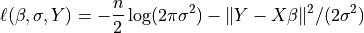
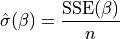

Note
This page is a reference documentation. It only explains the class signature, and not how to use it. Please refer to the user guide for the big picture.
8.13.5. nilearn.glm.OLSModel¶
- class nilearn.glm.OLSModel(design)[source]¶
A simple ordinary least squares model.
- Parameters
- designarray-like
This is your design matrix. Data are assumed to be column ordered with observations in rows.
Notes
This class is experimental. It may change in any future release of Nilearn.
- Attributes
- designndarray
This is the design, or X, matrix.
- whitened_designndarray
This is the whitened design matrix. design == whitened_design by default for the OLSModel, though models that inherit from the OLSModel will whiten the design.
- calc_betandarray
This is the Moore-Penrose pseudoinverse of the whitened design matrix.
- normalized_cov_betandarray
np.dot(calc_beta, calc_beta.T)- df_residualsscalar
Degrees of freedom of the residuals. Number of observations less the rank of the design.
- df_modelscalar
Degrees of freedome of the model. The rank of the design.
Methods
model.__init___(design)
model.logL(b=self.beta, Y)
- __init__(design)[source]¶
- Parameters
- designarray-like
This is your design matrix. Data are assumed to be column ordered with observations in rows.
- logL(beta, Y, nuisance=None)[source]¶
Returns the value of the loglikelihood function at beta.
Given the whitened design matrix, the loglikelihood is evaluated at the parameter vector, beta, for the dependent variable, Y and the nuisance parameter, sigma [1].
- Parameters
- betandarray
The parameter estimates. Must be of length df_model.
- Yndarray
The dependent variable
- nuisancedict, optional
A dict with key ‘sigma’, which is an optional estimate of sigma. If None, defaults to its maximum likelihood estimate (with beta fixed) as
sum((Y - X*beta)**2) / n, where n=Y.shape[0], X=self.design.
- Returns
- loglffloat
The value of the loglikelihood function.
Notes
The log-Likelihood Function is defined as

The parameter
 above is what is sometimes referred to
as a nuisance parameter. That is, the likelihood is considered as a
function of
above is what is sometimes referred to
as a nuisance parameter. That is, the likelihood is considered as a
function of  , but to evaluate it, a value of
is needed.
, but to evaluate it, a value of
is needed.If
is not provided,
then its maximum likelihood estimate:
is plugged in. This likelihood is now a function of only
and is technically referred to as a profile-likelihood.References
- 1
Green. “Econometric Analysis,” 5th ed., Pearson, 2003.
- whiten(X)[source]¶
Whiten design matrix
- Parameters
- Xarray
design matrix
- Returns
- whitened_Xarray
This matrix is the matrix whose pseudoinverse is ultimately used in estimating the coefficients. For OLSModel, it is does nothing. For WLSmodel, ARmodel, it pre-applies a square root of the covariance matrix to X.